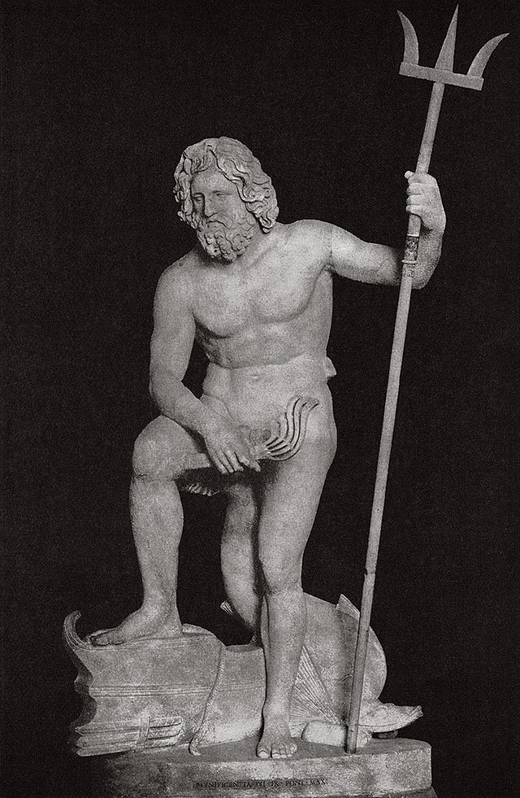

Poseidon is a hot-blooded deity who is often depicted wielding a trident. He is the second son of Cronus and Rhea, and was swallowed by Cronus at birth. The god of the sea, storms, earthquakes, and horses. His Roman equivalent is Neptune. With the defeat of his father Cronos, Poseidon was given the sea, while his brothers, Zeus and Hades, were given the sky and underworld respectively.
First Page